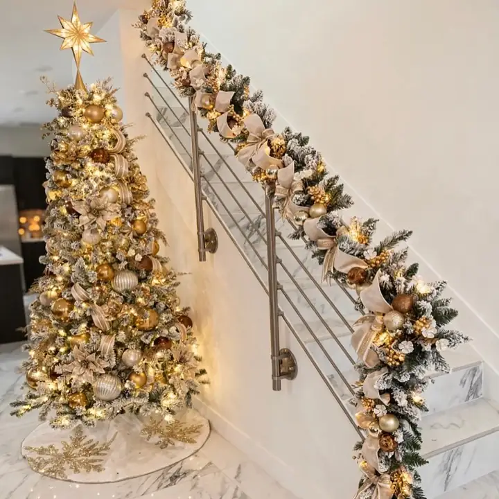
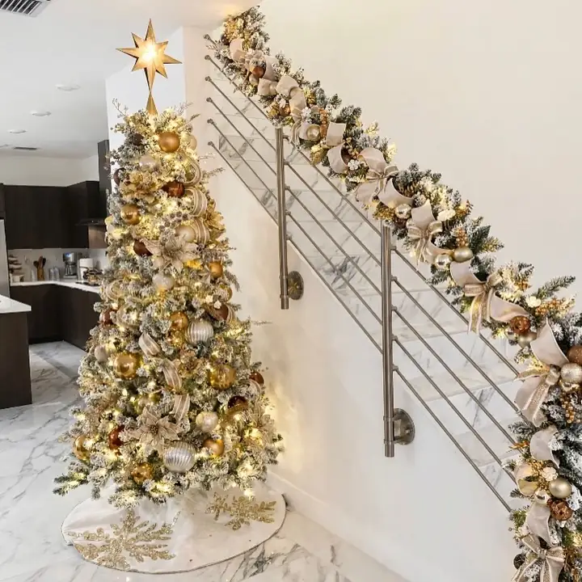
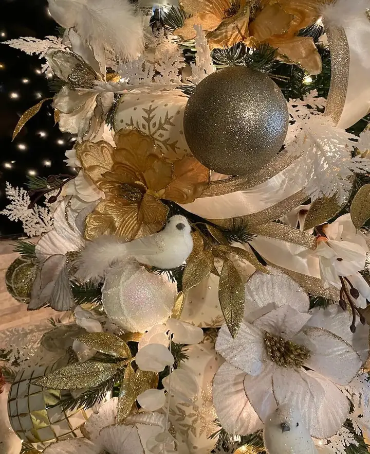

Miami / the rest of the house
A beautifully decorated tree in an otherwise bare room looks like an object someone put there. Carry two or three notes of the same color story onto the staircase and the mantel and the whole floor reads as one decision.

A staircase is the only decoration in a home that is seen from both floors and from the front door at the same time. Done well it does more work than any single room. Done badly, which usually means a thin garland zip tied on and left to sag, it drags the tree down with it.
The garland gets secured at intervals so it holds its curve, built up with the same florals and picks used on the tree, and finished at the newel post where people actually look.
The same logic applies anywhere with a horizontal edge. A mantel wants asymmetry, with weight on one side and a trail on the other. A doorway wants the arch respected, not filled. An entry table is the first and last thing anyone sees, which makes it worth more attention than it usually gets.
None of these need to be done all at once. Most people add one surface a year, which is a perfectly sensible way to do it when the decorations are being bought as well.
Garlands and railings are priced by the length of the run, so a measurement in feet is the single most useful thing you can send. Mantels and entry pieces are priced per surface.
Almost everyone books these alongside the tree, on the same visit, which keeps it to one trip and one install day. Mention it in the notes on the quote form and it lands on the same estimate.



Send the length of the railing in feet, or just a photo from the bottom of the stairs, and it comes back on the same estimate as the tree.